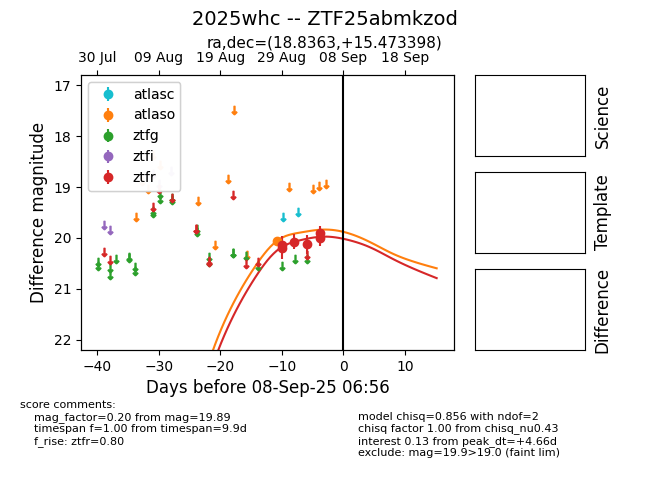

FINK: ZTF25abmkzod
Lasair: ZTF25abmkzod
ALeRCE: ZTF25abmkzod
TNS: 2025whc
YSE: 2025whc
ZTF25abmkzod (ztf,fink)
2025whc (tns,yse)
equatorial (ra, dec) = (18.8363,+15.47340)
galactic (l, b) = (131.3942,-47.00515)

last atlaso=20.06, ztfr=19.89
1 atlaso, 6 ztfr detections